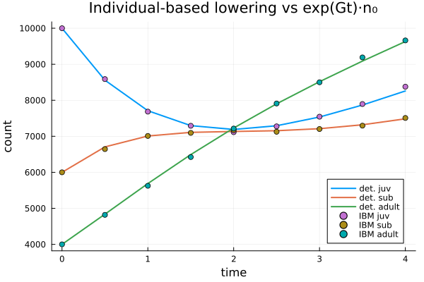

Lowering to Individual-Based Models
A categorical specification can be lowered to many concrete realizations. Other tutorials lower nets to matrix and integral projection models, continuous-time generators, and their demographic-stochastic variants. This one adds the final route: an individual-based model (IBM) on the Ark.jl entity-component-system, provided by IndividualBasedPopulationDynamics.jl.
The same ValuedProjectionNet and the same fecundity tagging that drive the deterministic and demographic lowerings also drive the IBM lowering — so one specification yields a deterministic mean, a continuous-time Markov chain, and a population of simulated individuals.
A stage-structured valued net
Three stages — juvenile, sub-adult, adult — with maturation transitions and adult reproduction:
using CategoricalPopulationDynamics
using IndividualBasedPopulationDynamics: ibm_run_stage!
using Random, LinearAlgebra, Plots
vnet = ValuedProjectionNet([:juv, :sub, :adult],
:maturation => [(:juv => :sub) => 0.5, (:sub => :adult) => 0.4],
:reproduction => [(:adult => :juv) => 0.6])
(stages = stage_names(vnet), transitions = transition_names(vnet))(stages = [:juv, :sub, :adult], transitions = [:maturation, :reproduction])The move-vs-birth split (shared with the demographic targets) is what the lowering uses: :reproduction is tagged as fecundity (births), the rest are inter-stage movements.
U, F = survival_fecundity_matrices(vnet; fecundity = [:reproduction])
(movements = U, births = F)(movements = [0.0 0.0 0.0; 0.5 0.0 0.0; 0.0 0.4 0.0], births = [0.0 0.0 0.6; 0.0 0.0 0.0; 0.0 0.0 0.0])Lowering to an individual-based model
IBMStageTarget carries the initial per-stage counts, the fecundity tag, a per-stage mortality vector, and an RNG. Lowering returns an Ark world of individuals, which we run as a continuous-time jump process:
target = IBMStageTarget([10_000, 6_000, 4_000];
fecundity = [:reproduction],
death = [0.1, 0.1, 0.2],
rng = Random.Xoshiro(50))
world = lower(vnet, target)
res = ibm_run_stage!(world, (0.0, 4.0); dt = 0.01, saveat = 0.5, n_stages = 3)
res.counts[1]3-element Vector{Int64}:
10000
6000
4000Agreement with the deterministic mean
The IBM is a pure-jump Markov process whose mean is the finite-state generator $\dot n = G n$ assembled from the rates. The per-stage counts track $\exp(Gt)\,n_0$:
G = [-0.6 0.0 0.6; # movements − (out-rate + death) on the diagonal + births
0.5 -0.5 0.0;
0.0 0.4 -0.2]
n0 = Float64.([10_000, 6_000, 4_000])
ibm_counts = reduce(hcat, [Float64.(c) for c in res.counts])'
det_counts = reduce(hcat, [exp(G .* t) * n0 for t in res.t])'
plot(res.t, det_counts; lw = 2, label = ["det. juv" "det. sub" "det. adult"])
plot!(res.t, ibm_counts; seriestype = :scatter,
label = ["IBM juv" "IBM sub" "IBM adult"],
xlabel = "time", ylabel = "count",
title = "Individual-based lowering vs exp(Gt)·n₀")
One specification, many realizations
The same vnet can be lowered along every route — switching realizations is a one-line change of the target:
typeof(lower(vnet, IBMStageTarget([100, 60, 40];
fecundity = [:reproduction], death = [0.1, 0.1, 0.2])))Ark.World{Ark._WorldStorage{Tuple{Ark._ComponentStorage{IndividualBasedPopulationDynamics.Stage, Vector{IndividualBasedPopulationDynamics.Stage}}}, (0x0000000000000000,)}, Ark._WorldState{1, 0}}| Target | Realization |
|---|---|
MPMTarget / DemographicMPMTarget | discrete-time matrix model / its demographic draw |
FiniteStateDynamicsTarget / DemographicFiniteStateTarget | continuous-time generator / its CTMC |
IBMStageTarget | individual-based (Ark ECS) realization |
So one categorical specification spans deterministic, demographic, and individual-based realizations through a single lower interface.